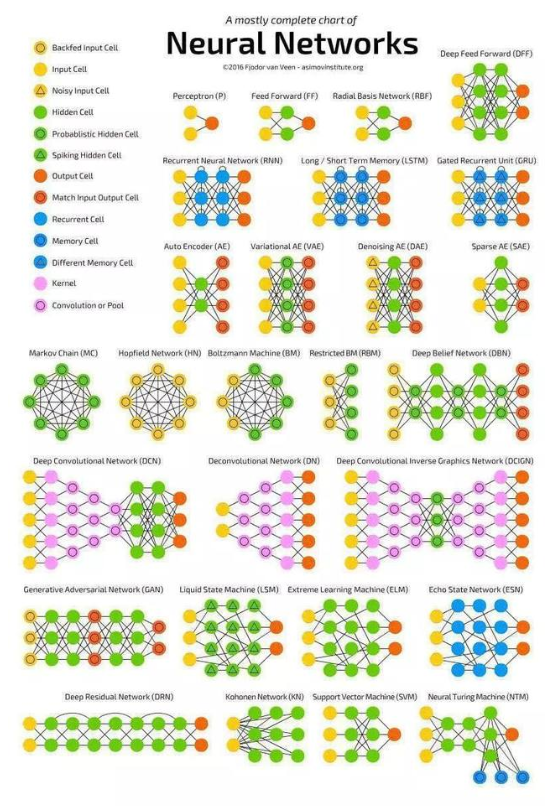
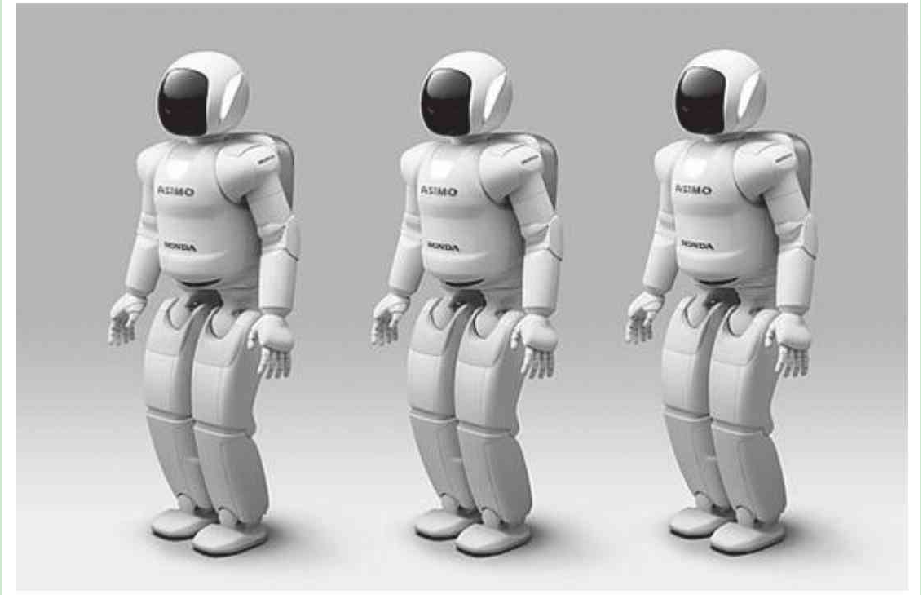

神经网络模型和应用

- Perceptron 感知机
- 前馈神经网络
- RBF 神经网络
- DFF深度前馈神经网络
- RNN递归神经网络
- LSTM长短时记忆网络
- GRU是具有不同门的LSTM
- Autoencoders自动编码器
- 变分自编码器
- 降噪自动编码器（DAE）
- 稀疏自编码器（SAE）
- 马尔可夫链（Markov Chain, MC）
- 霍普菲尔网络（HN）
- 波尔滋曼机（BM）
- 限制型波尔滋曼机（RBM）
- 深度信念网络（DBN）
- 深度卷积网络（DCN）
- 去卷积网络（DN）
- 去卷积网络（DN）
- 生成对抗网络（GAN）
- 液体状态机（LSM）
- 液体状态机（LSM）
- 回声状态网络（ESN）
- 深度残差网络（DRN）
- Kohonen神经网络（KN）
- 支持向量机（SVM）
- 神经图灵机（NTM）
具体介绍，[点击这儿](https://baijiahao.baidu.com/s?id=1590362274035183205&wfr=spider&for=pc)
应用
计算机视觉
- 图像分类
- OCR
- 物体识别
- 缺陷检测
语音识别
- siri
自然语言处理
语言模型
机器翻译
词性标注
实体识别
情感分析
广告推荐
搜索排序
人机博弈
- AlphaGo
机器人

医学
- 影像诊断
- 病情分析
- 唇语识别
生物
化学
- 化学成分分析
金融
风险评估，智能人脸识别， 特征的收集归集应用到趋势分析、智能投顾等领域
相关链接
https://zhuanlan.zhihu.com/p/26392608
https://blog.csdn.net/aliceyangxi1987/article/details/71055189
https://blog.csdn.net/sinat_33718563/article/details/80308162